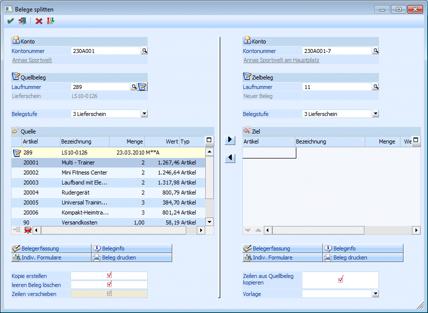
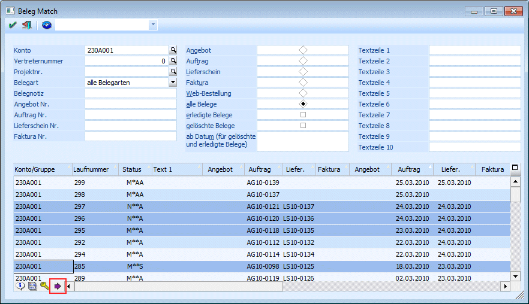
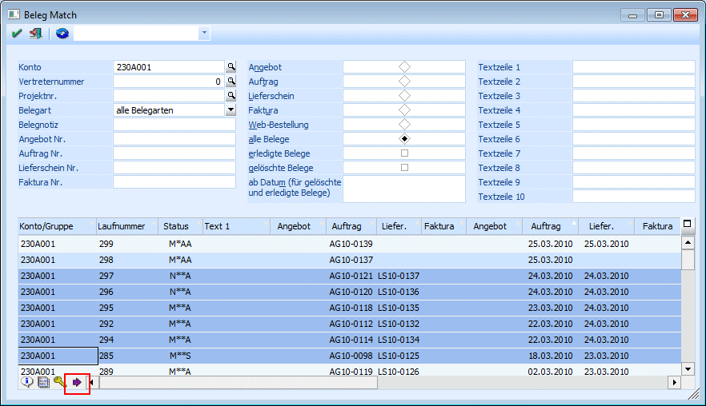
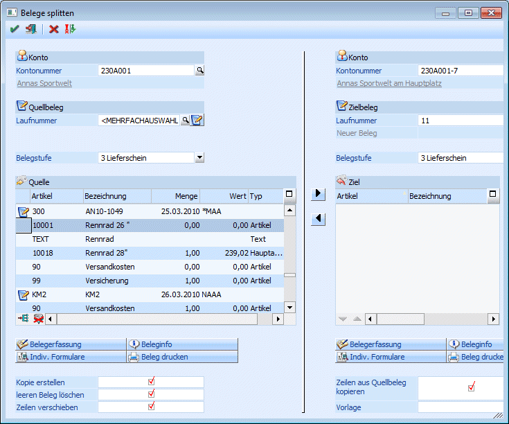
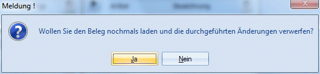

Über den Menüpunkt…
1 WinLine FAKT
1 Erfassen
1 Belegaufteilung
1 Belege Splitten
… können Belege aufgeteilt/kopiert und in weiterer Folge bearbeitet werden.
Das Fenster ist in die zwei Bereiche Ausgangsbeleg(e) und Zielbeleg aufgeteilt. Dabei ist der Bereich "Zielbeleg" aber nicht unbedingt erforderlich, es können auch Belege nur im Bereich "Ausgangsbeleg(e)" bearbeitet werden.

Ausgangsbeleg(e)
Auf der linken Seite kann die Basis ausgewählt werden, d.h. hier kann angegeben werden, aus welchem Beleg (Belegen) die Daten verwendet werden sollen. Dabei können folgende Eingaben vorgenommen werden:
Ø Kontonummer
Eingabe der Kontonummer, bei dem der "Ausgangsbeleg" gespeichert ist. Durch Drücken der F9-Taste kann nach allen angelegten Personenkonten gesucht werden. Wenn eine entsprechende Kontonummer eingetragen und bestätigt wurde, wird unter dem Feld Kontonummer der Name des Kontos eingeblendet (durch einen Klick auf die Kontobezeichnung kann die Konteninfo geöffnet werden).
Ø Quellbeleg / Laufnummer
Ist beim ausgewählten Konto nur ein "nicht gerechneter/nicht gedruckter" Beleg vorhanden wird dieser automatisch vorgeschlagen. Ansonsten kann über den Belegmatchcode (Drücken der F9-Taste im Feld Laufnummer) ein beliebiger Beleg ausgewählt werden.
Im Belegmatchcode kann auch eine Mehrfachselektion vorgenommen werden:
Dazu werden im Belegmatchcode unter Drücken der STRG-Taste die gewünschten Belege angeklickt. Dadurch werden die entsprechenden Belege farbig markiert.

Oder es wird eine Zeile angeklickt, dann die SHIFT-Taste gedrückt und dann eine weitere Zeile angeklickt - dann wird der gesamte Bereich farbig markiert.

Durch Anklicken des Buttons "Übernehmen" ( ) werden dann die so ausgewählten Belege
(farbig markiert) in den Belegsplitt übernommen. In diesem Fall wird im Feld
"Laufnummer" der Text "<MEHRFACHAUSWAHL>" angezeigt.
) werden dann die so ausgewählten Belege
(farbig markiert) in den Belegsplitt übernommen. In diesem Fall wird im Feld
"Laufnummer" der Text "<MEHRFACHAUSWAHL>" angezeigt.
Durch Anklicken des Buttons "alle Belege übernehmen" () können alle "offenen" Belege übernommen werden. In dem Fall versteht man unter "offene" Belege alle Belege, die in den Stufen Auftrag, Lieferschein, Rechnung noch nicht gerechnet oder gedruckt wurden bzw. alle Angebote.
Nach der Auswahl des (der) Belege(s) werden die entsprechenden Zeilen in die Tabelle "Quelle" gefüllt, wobei alle Artikel-, Text- und Gutschriftszeilen berücksichtigt werden.

Ø Belegstufe
Aus der Auswahllistbox kann die Belegstufe gewählt werden, in der der (die) Quellbeleg(e) in weiterer Folge bearbeitet werden sollen.
Quelle
In der Tabelle Quelle sind folgende Informationen ersichtlich:
Ø Belegkopfinformationen
Wenn in der ersten Spalte der Zeile das Symbol angezeigt wird, handelt es sich um eine Belegkopfzeile und hier werden dann die Informationen…
Ø Laufnummer
Ø Belegnummer
Ø Belegdatum
Ø Status (Bearbeitungsstatus)
… angezeigt.
Artikelzeilen
In den Artikelzeilen werden die Informationen…
Ø Artikelnummer
Ø Bezeichnung
Ø Menge
Ø Wert
Ø Typ
… angezeigt. Im Feld Typ wird der Artikeltyp angezeigt, wobei hier alle Belegzeilentypen - mit Ausnahme von Zwischensummen, die dynamisch aufgrund der Zwischensummenoptionen in der Belegzeile gebildet werden und Textkennzeichen, die aufgrund der Kombination Kunde/Artikel am Ende des Belegs eingefügt werden, zur Verfügung stehen.
Ausgehend von den angezeigten Datensätzen können folgende Aktionen durchgeführt werden:
Ø Belegzeilen zusammenfassen
Wenn in der Tabelle mehrere Belege vorhanden sind, dann können alle Belegzeilen durch Anklicken des Buttons "Belegzeilen zusammenfassen" auf einen Beleg "verschoben" werden.
Vorgangsweise
Zuerst muss in der linken Tabelle der Beleg markiert werden, in den die Belegzeilen verschoben werden sollen. Durch das Anklicken des Buttons "Belegzeilen zusammenfassen" werden dann die Belegzeilen zu den markierten Beleg verschoben. Am Ende der Tabellen werden dann die "Ausgangsbelege" angezeigt, wo dann nur mehr die "Kopfinformationen" ersichtlich sind (Laufnummer, Belegnummer, Datum, Status). Zu diesem Zeitpunkt wurden aber noch keine Daten verändert.
Ø  Alle Zeilen markieren (ALT + A)
Alle Zeilen markieren (ALT + A)
Mit der Tastenkombination ALT + A oder durch Anklicken des Buttons werden alle Zeilen in der linken Tabelle markiert.
Es gibt aber auch die Möglichkeit, einzelne Zeilen zu markieren. Dazu muss vor dem Anklicken einer Zeile die STRG-Taste gedrückt werden. Bleibt die STRG-Taste gedrückt und werden weitere Zeilen angeklickt, werden auch diese markiert.
Es kann auch ein ganzer Block von Zeilen markiert werden. Dazu wird die erste Zeile angeklickt, dann wird die SHIFT-Taste gedrückt. Danach wird dann auf die letzte gewünschte Zeile geklickt - der Bereich dazwischen wird nun markiert.
Mit den Buttons "nach Rechts" ( ) bzw. "nach Links" () können markierte Zeilen zwischen den
Tabellen verschoben werden.
) bzw. "nach Links" () können markierte Zeilen zwischen den
Tabellen verschoben werden.
Ø Belegerfassung
Wenn der Button Belegerfassung angeklickt wird, dann werden alle bearbeiteten Belege gemäß den Einstellungen gespeichert und im Anschluss wird dann der Beleg, in den alle Belegzeilen übergeleitet wurden im Fenster Belegerfassung geöffnet.
Ø Indiv. Formulare
Wenn dieser Button angeklickt wird, dann werden alle bearbeiteten Belege gemäß den Einstellungen gespeichert und im Anschluss wird dann der Beleg, in den alle Belegzeilen übergeleitet wurden im Fenster Belege erfassen (Individuelle Formulare) geöffnet.
Ø Beleginfo
Durch Anklicken des Buttons Beleginfo wird eine Vorschau des erstellten Beleges angezeigt - und zwar in der Belegstufe, die im oberen Bereich angegeben wurde.
Ø Beleg drucken
Durch Anklicken des Buttons Beleginfo wird der Beleg in der Belegstufe, die im oberen Bereich angegeben wurde, gespeichert und dann gedruckt.
Optionen
Folgende Optionen können für das Zusammenfügen von Belegen verwendet werden:
Ø Kopie erstellen
Wenn diese Option aktiviert ist, dann wird der Quellbeleg unverändert wegkopiert und als erledigter Beleg markiert.
Ø leeren Beleg löschen
Wenn alle Zeilen aus dem Quellbeleg entfernt werden, wird dieser als gelöschter Beleg markiert.
Ø Zeilen verschieben
Wenn Belegzeilen in einen Beleg zusammengeführt werden, dann kann damit festgelegt werden, ob die Belegzeilen wirklich verschoben, also im Quellbeleg gelöscht, oder kopiert werden
Zielbeleg
Auf der rechten Seite kann angegeben werden, wohin die Daten der Ausgangsbelege transferiert werden sollen.
Ø Kontonummer
Eingabe der Kontonummer, wo der Zielbeleg gespeichert werden soll. Durch Drücken der F9-Taste kann nach allen angelegten Personenkonten gesucht werden. Wenn eine entsprechende Kontonummer eingetragen und bestätigt wurde, wird unter dem Feld Kontonummer der Name des Kontos eingeblendet (durch einen Klick auf die Kontobezeichnung kann die Konteninfo geöffnet werden).
Hinweis
Derzeit können Belege nur zwischen Kunden (Kunde zu Kunde) oder Lieferanten (Lieferant zu Lieferant) "gesplittet" werden - das gilt auch für Interessenten.
Ø Zielbeleg / Laufnummer
Sobald die Kontonummer bestätigt ist, wird die nächste freie Laufnummer des Kontos vorgeschlagen. Über den Belegmatchcode kann aber auch ein bestehender Beleg (keine gedruckte Rechnung) ausgewählt werden.
Ø Belegstufe
Aus der Auswahllistbox kann die Belegstufe gewählt werden, in der der Zielbeleg in weiterer Folge bearbeitet werden sollen.
Ziel
In den Artikelzeilen werden die Informationen…
Ø Artikelnummer
Ø Bezeichnung
Ø Menge
Ø Wert
Ø Typ
… angezeigt. Im Feld Typ wird der Artikeltyp angezeigt, wobei hier die Typen "Artikel", "Text" und "Gutschrift" unterstützt werden.
Nun können die Zeilen zwischen Quell- und Zielbeleg ausgetauscht werden.
In der Zieltabelle gibt es noch die Möglichkeit, mit den Buttons (Zeile nach unten verschieben) bzw. (Zeile nach oben verschieben) die Artikelreihenfolge zu verändern, wobei hier immer nur ein Artikel innerhalb der Tabelle verschoben werden kann.
Aktionen - Zielbeleg
Ø Belegerfassung
Wenn der Button Belegerfassung angeklickt wird, dann wird der Zielbeleg gemäß den Einstellungen gespeichert und im Anschluss wird dann der Beleg, in den die Belegzeilen übergeleitet wurden im Fenster Belegerfassung geöffnet.
Ø Indiv. Formulare
Wenn dieser Button angeklickt wird, dann wird der "neue" Beleg gemäß den Einstellungen gespeichert und im Anschluss wird dann der Beleg, in den die Belegzeilen übergeleitet wurden im Fenster Belege erfassen (Individuelle Formulare) geöffnet.
Ø Beleginfo
Durch Anklicken des Buttons Beleginfo wird eine Vorschau des erstellten Beleges angezeigt - und zwar in der Belegstufe, die im oberen Bereich angegeben wurde.
Ø Beleg drucken
Durch Anklicken des Buttons Beleginfo wird der Beleg in der Belegstufe, die im oberen Bereich angegeben wurde, gespeichert und dann gedruckt.
Optionen
Folgende Optionen können für das Zusammenfügen von Belegen verwendet werden:
Ø Zeilen aus Quellbeleg kopieren
Damit kann festgelegt werden, ob die Belegzeilen wirklich verschoben, also im Quellbeleg gelöscht, oder kopiert werden.
Ø Vorlage
Aus der Auswahllistbox kann eine Belegvorlage ausgewählt werden, mit deren Einstellungen der neu erstellte Beleg angelegt werden soll.
Buttons
Ø  OK-Button (F5)
OK-Button (F5)
Durch Drücken der F5-Taste werden die Belege gemäß Einstellung gespeichert, und beide Belege werden als Info-Formulare angezeigt und können bearbeitet bzw. gedruckt werden.
Ø  ENDE-Button (ESC)
ENDE-Button (ESC)
Durch Drücken der ESC-Taste wird das Fenster geschlossen, es werden keine Änderungen gespeichert.
Ø  Initialisieren-Button (F4)
Initialisieren-Button (F4)
Durch Drücken der F4-Taste werden alle vorgenommen Einstellungen rückgängig gemacht. Das Fenster wird dargestellt, wie wenn der Menüpunkt neu aufgerufen worden wäre.
Ø  Wiederherstellen-Button
Wiederherstellen-Button
Durch Anklicken dieses Buttons wird folgende Meldung ausgegeben:

Wird diese Meldung mit JA bestätigt, so wird jener Zustand wieder hergestellt, bevor irgendwelche Artikelzeilen verschoben wurden. Wird die Meldung mit NEIN beantwortet, bleiben alle vorgenommen Änderungen erhalten.